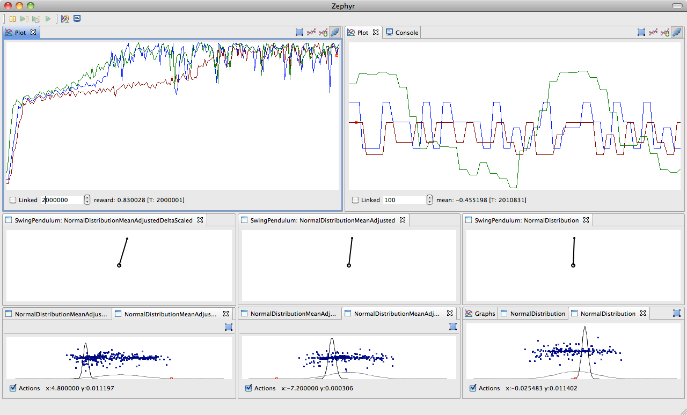
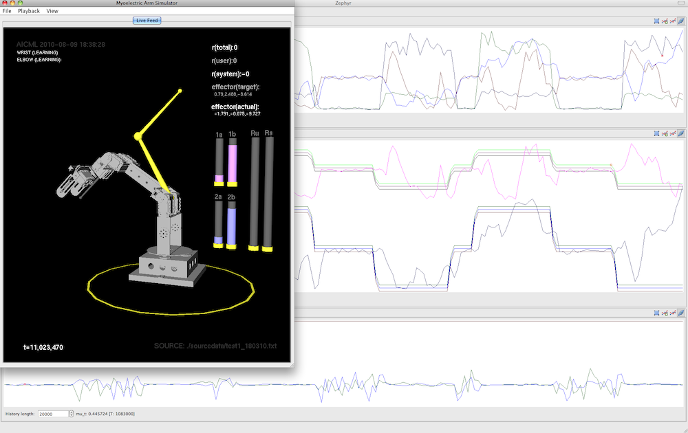
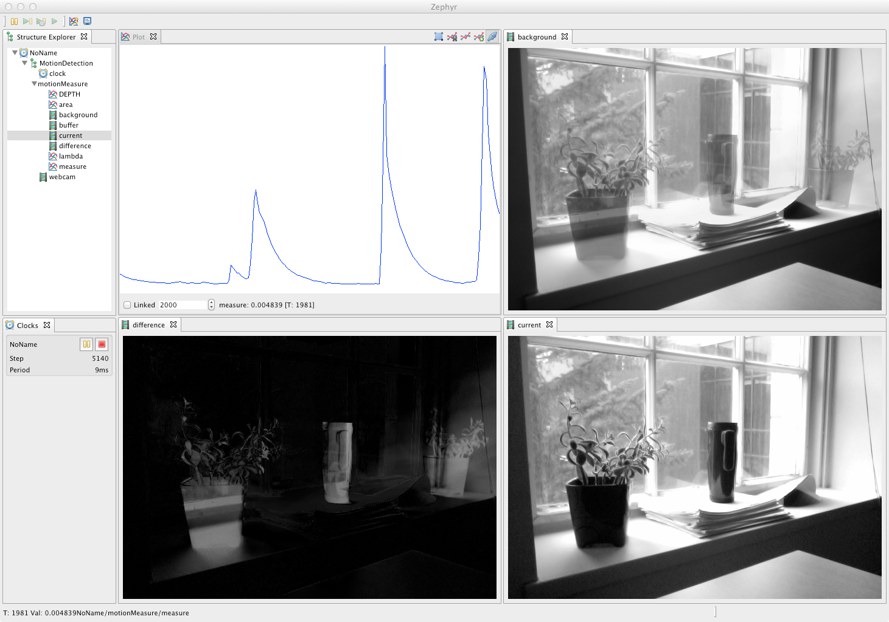
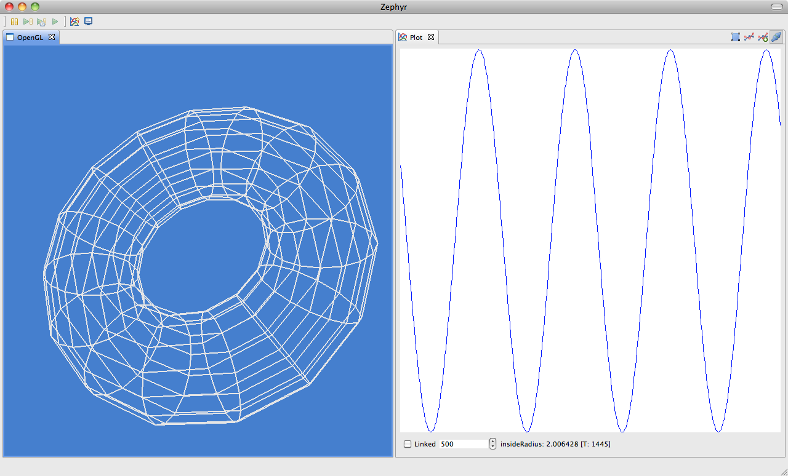
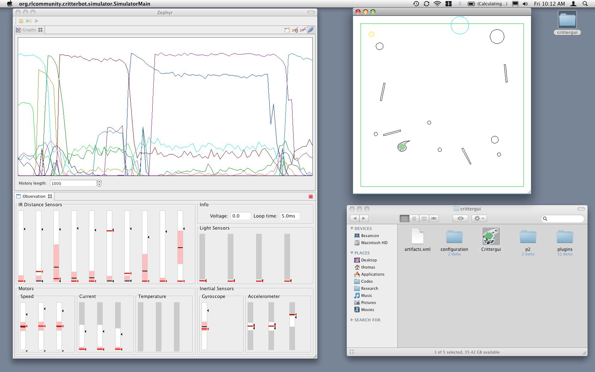
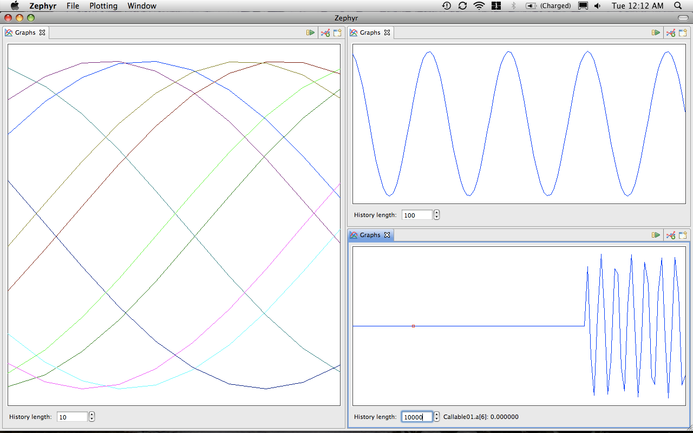

---
title: Screenshot Gallery
layout: default
---
Screenshot Gallery
Zephyr used with RLPark on the swing pendulum problem with different actor-critic algorithms:

Zephyr displaying data from three sources: a robotic arm simulator, a reinforcement learning agent, and a set of data log
files:

Zephyr with Javacv
displaying the different steps of background subtraction on a video (note the tree on the left is build automatically
from the code running the process):

Zephyr with OpenGL with
JOGL
in SWT (
snippet 209
):

Zephyr used with Crittergui running the Critterbot's simulator:

Zephyr running example project of the tutorial Create a new view:
Zephyr running an example project:
